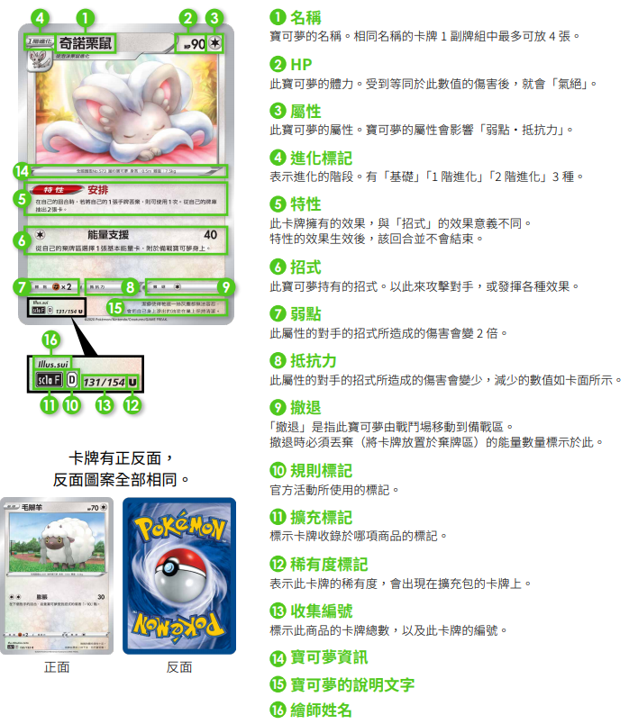
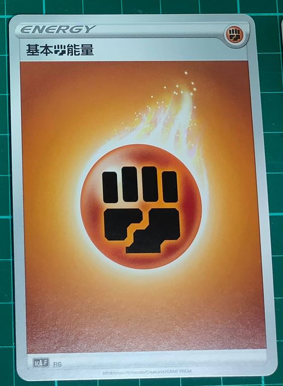
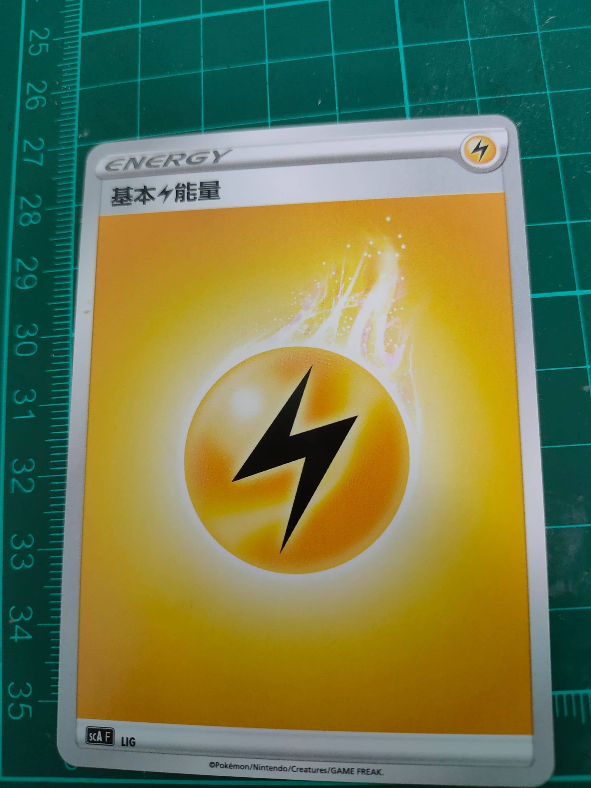
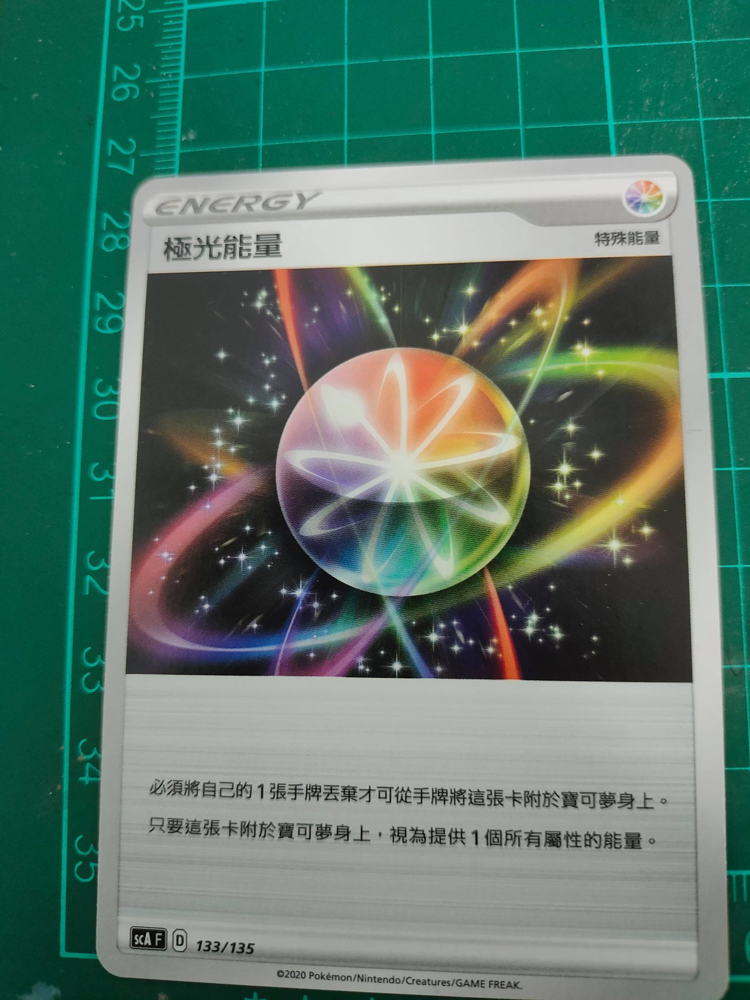
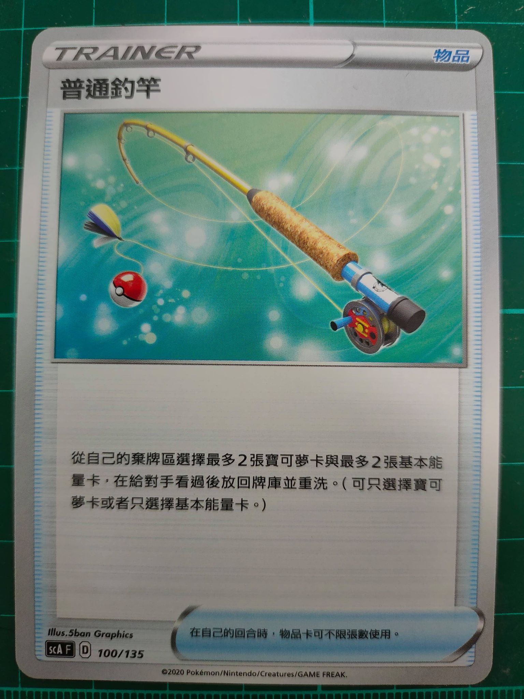
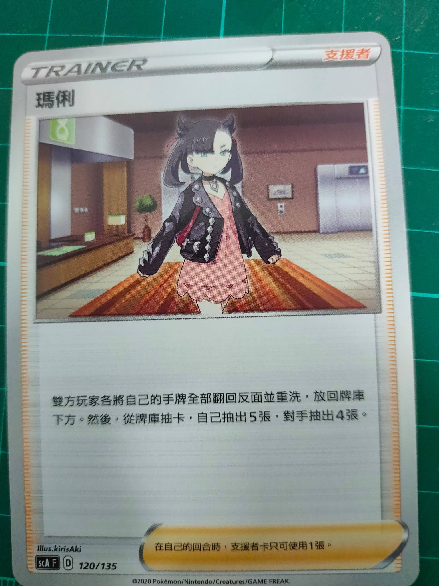
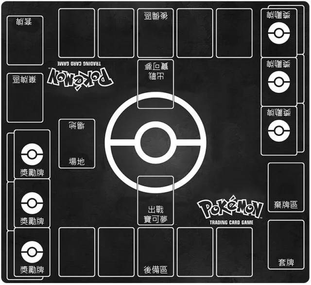
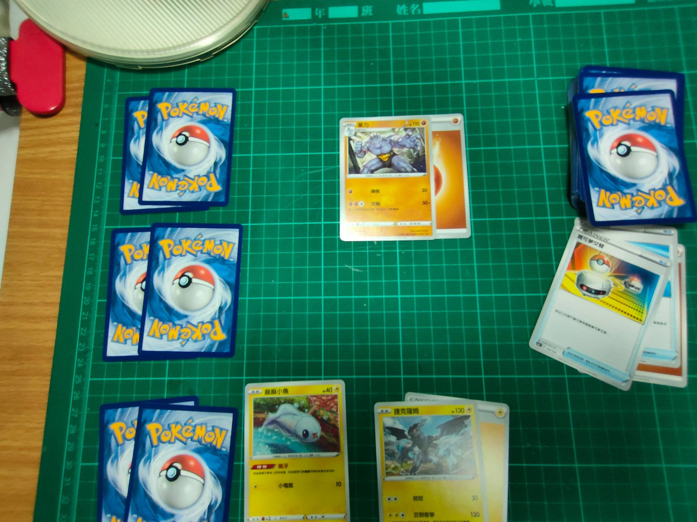
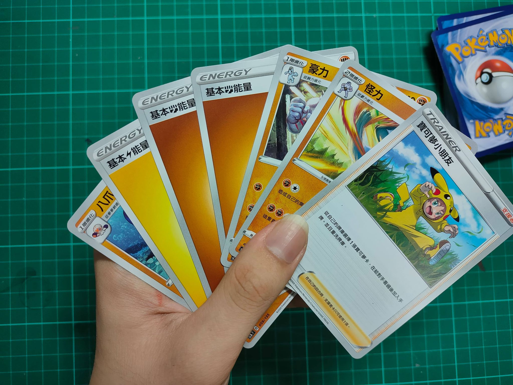
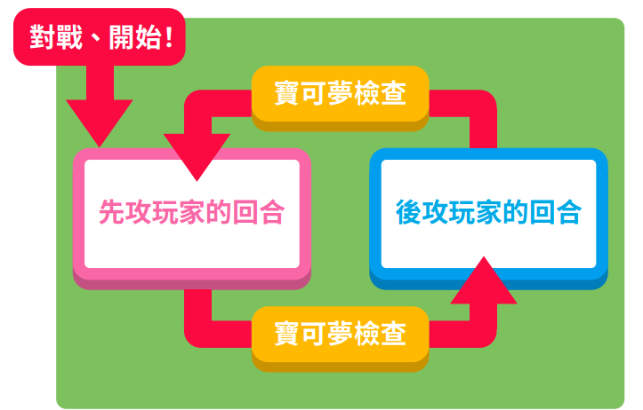

卡牌介紹
01.寶可夢卡
寶可夢卡是會使出招式攻擊對手的寶可夢，或是承受對手的寶可夢攻擊的卡牌，
每隻寶可夢的 HP（體力）和持有的招式都不同。
受到傷害導致 HP 殘值為 0 時，寶可夢就會「氣絕」而無法繼續作戰了。

02.能量卡
寶可夢使出招式，或是「撤退」到備戰區時需要的卡牌，附於場上的寶可夢身上使用。


特殊能量
特殊能量有許多種類，除了賦予寶可夢能量以外，還會有特別的效果。

03.訓練家卡
用各式各樣的效果來幫忙作戰的卡牌，依使用方法和效果可分成「物品卡」、「支援者卡」等種類。
物品卡

支援者卡

戰鬥場地

◉ 牌庫：將牌組正面朝下放置於此，即為牌庫。所有玩家都需要 60 張卡片才能進行對戰
◉ 棄牌區：此區用來放置「氣絕」的寶可夢，或是使用完畢的卡牌。
「將卡牌放置於此」的動作稱為「丟棄」，丟棄的卡牌一定是正面朝上放置。
◉ 出戰區：寶可夢出招戰鬥的地方。在戰鬥場上的寶可夢稱為「戰鬥寶可夢」。
◉ 後備區：此區用來放置要和戰鬥寶可夢互換的寶可夢，最多
可放5隻。
在備戰區的寶可夢稱為「備戰寶可夢」。
◉ 場地：放置場地卡的區域。
◉ 獎勵牌：在對戰開始前隨意從套牌抽出 6 張放置於獎勵牌。將對手的寶可夢「氣絕」後可獲得卡牌。
先將自己的獎賞卡拿完的玩家即為勝方。

對戰流程
01.勝敗條件
◉ 一方獎勵牌全數抽完，抽完者
獲勝。
◉ 當一方戰鬥區寶可夢遭到攻擊氣絕後，後備區無任何寶可夢可上場，該玩家即
戰敗。
◉ 當一方玩家在開始階段抽卡時，套牌區無任何卡能抽取，該玩家即
戰敗。
02.對戰準備
◉ 戰局首先以猜拳決定先攻、後攻(由猜拳獲勝的玩家來選擇要先攻還是後攻)，
接著雙方都抽出 7 張卡並覆蓋一張基礎寶可夢在戰鬥區。
特別要注意若手上沒抽到基礎寶可夢，必須告知對手後洗牌再抽 7 張，而對手可以在開局時多抽一張。
兩邊都準備好之後，就可以翻開覆蓋的寶可夢開始進行對戰。


03.注意事項
◉ 一回合只能用一張支援者。
◉ 一回合只能進行一次填能量的動作。
◉ 一回合只能進行一次撤退。
◉ 先手玩家無法使用招式，後手則可以。
◉ 寶可夢須於上場後的下一回合才可進化。
◉ 同名卡片的寶可夢跟道具（包含特殊能量）最多只能放四張，基礎能量卡則可放置超過四張。